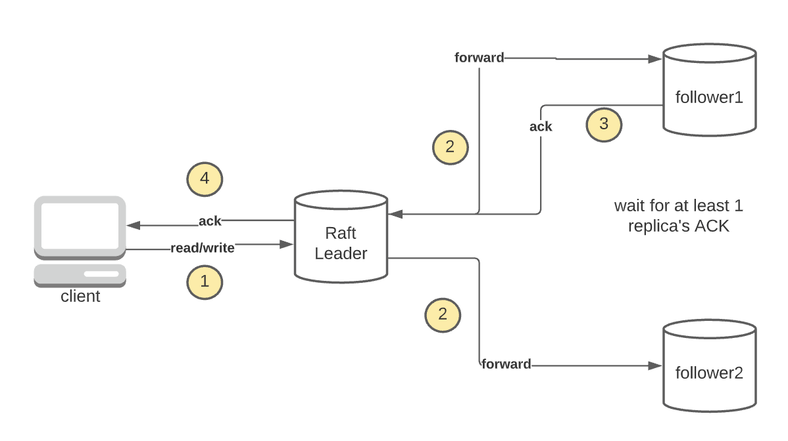
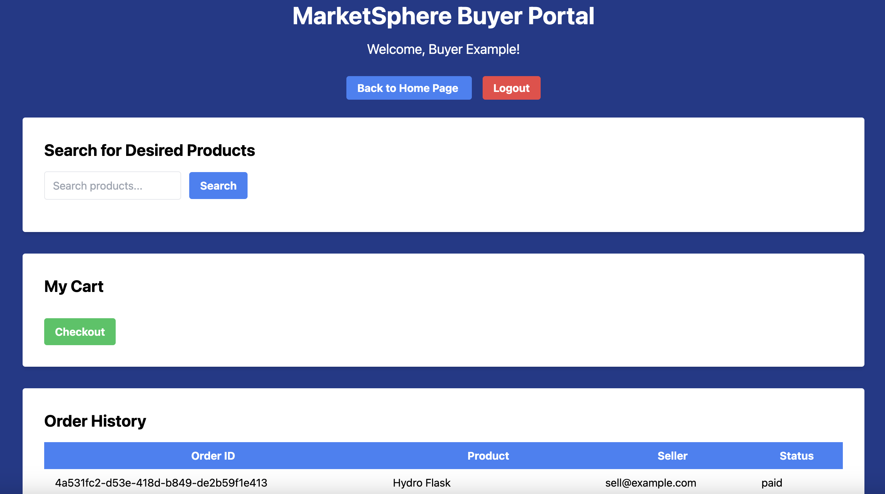
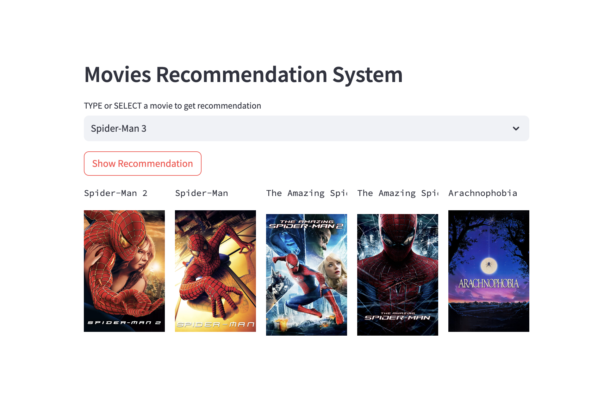
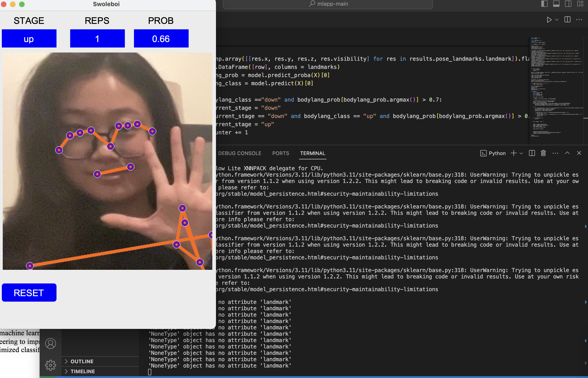
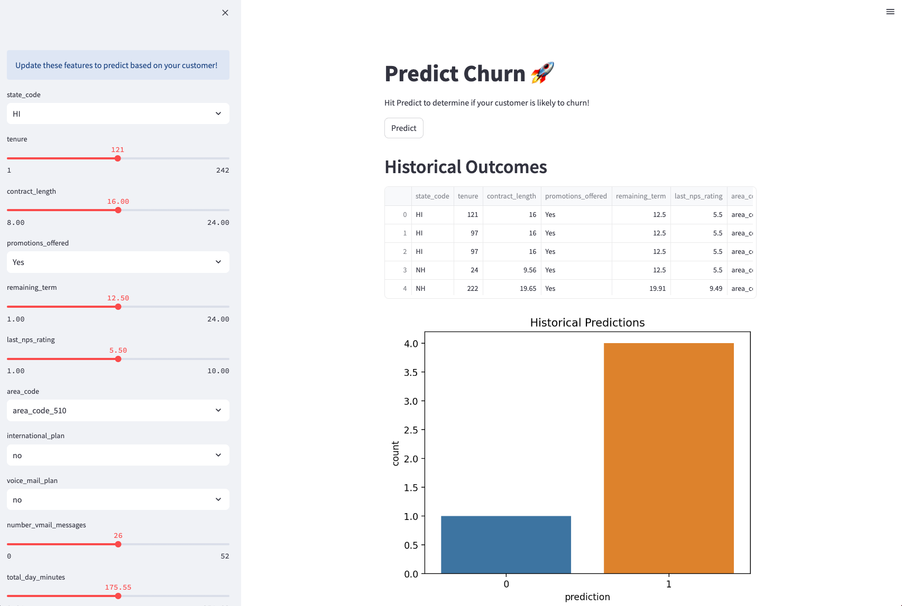
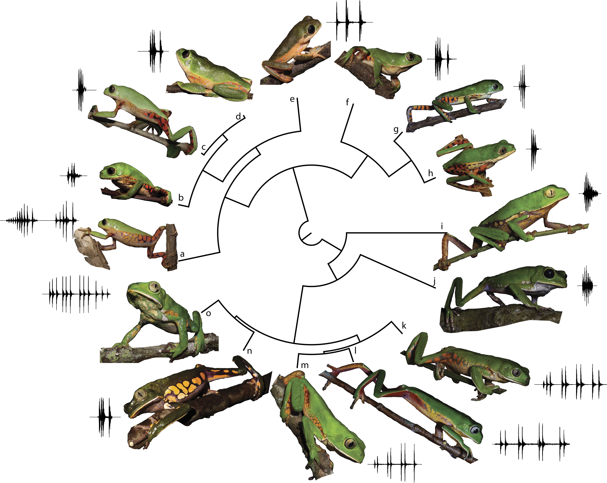

Robust distributed file storage system in Java utilizing the Raft consensus algorithm. Features include leader election, log replication, snapshot management, and state machine replication with thread-safe operations. Browser-accessible endpoints with dynamic cluster membership changes, demonstrating expertise in distributed systems architecture and concurrent programming.
#DistributedSystems #RaftConsensus #JavaDevelopment

MarketSphere is a dynamic web-based marketplace platform designed to connect sellers and buyers.
It offers a robust distributed database management system for products, orders, and user roles, facilitating an efficient and streamlined online trading environment.

This project implements a movie recommender system using Streamlit and content-based filtering. Users can enter a movie title and receive recommendations for similar movies.
It was deployed to Heroku.

Developed "Swoleboi," a sophisticated real-time exercise pose analysis and tracking application, utilizing Python and an array of libraries including Tkinter for the GUI, OpenCV for video capture and image processing, and MediaPipe for advanced pose estimation.

The web app appears in the browser for real-time churn prediction based on adjustable customer inputs. Customer features include tenure, promotions offered, etc.

This project uses an SQL pipeline to analyze real-world IoT sensor data from industrial machines. The goal is to detect early signs of machine failure so
maintenance can be scheduled proactively before a critical breakdown occurs.
This project aims to develop classifiers to identify frost in Martian terrain images using the HiRISE dataset.
It explores the effectiveness of a custom-built CNN+MLP model and compares it with transfer learning models (EfficientNetB0, ResNet50, and VGG16).
This project focuses on comparing different machine learning methodologies, including supervised, semi-supervised, unsupervised, and active learning techniques.
The analysis is conducted using Monte-Carlo simulations on two datasets: Breast Cancer Wisconsin Diagnostic and Banknote Authentication.

This project focuses on the advanced analysis of the Anuran Calls (MFCCs) Dataset, utilizing both classification and clustering techniques.
The primary objectives include multi-class and multi-label classification using Support Vector Machines (SVMs) and K-Means clustering.
The project explores different SVM approaches, such as Gaussian kernels and L1-penalized SVMs, and addresses class imbalance.
This project offers a comprehensive look at tree-based machine learning techniques, particularly focusing on the APS Failure dataset from Scania Trucks.
A significant highlight of this notebook is the utilization of SMOTE (Synthetic Minority Over-sampling Technique) for addressing class imbalance, a common challenge in machine learning.
This project presents a detailed analysis of the Combined Cycle Power Plant Data Set, covering the years 2006 to 2011.
The goal is to predict the net hourly electrical energy output (EP) using key ambient variables like Temperature (T), Ambient Pressure (AP), Relative Humidity (RH), and Exhaust Vacuum (V).
Employing a range of statistical and machine learning techniques, the project explores linear regression, multiple regression, polynomial regression, interaction term analysis, and KNN regression.
This project is centered around the analysis and classification of the Vertebral Column Data Set, originally compiled by Dr. Henrique da Mota.
The primary focus is on binary classification of spinal conditions into Normal (NO=0) and Abnormal (AB=1), utilizing biomechanical features from the pelvis and lumbar spine.
The project encompasses data pre-processing, exploratory data analysis, and classification employing the K-Nearest Neighbors (KNN) algorithm.

This is link to my research group: The COVID-19 Data Repository, based in the Epstein Department of Industrial and Systems Engineering at the University of Southern California, provides
visualization of disease transmission & distributed vaccine over time, by location.
The HR employee data contains information like evaluations, promotions, satisfaction, and whether employees have left, which allows analysis of factors related to attrition.
By modeling this data using different models, HR can predict if and when employees will leave based on their characteristics and make changes to improve retention.